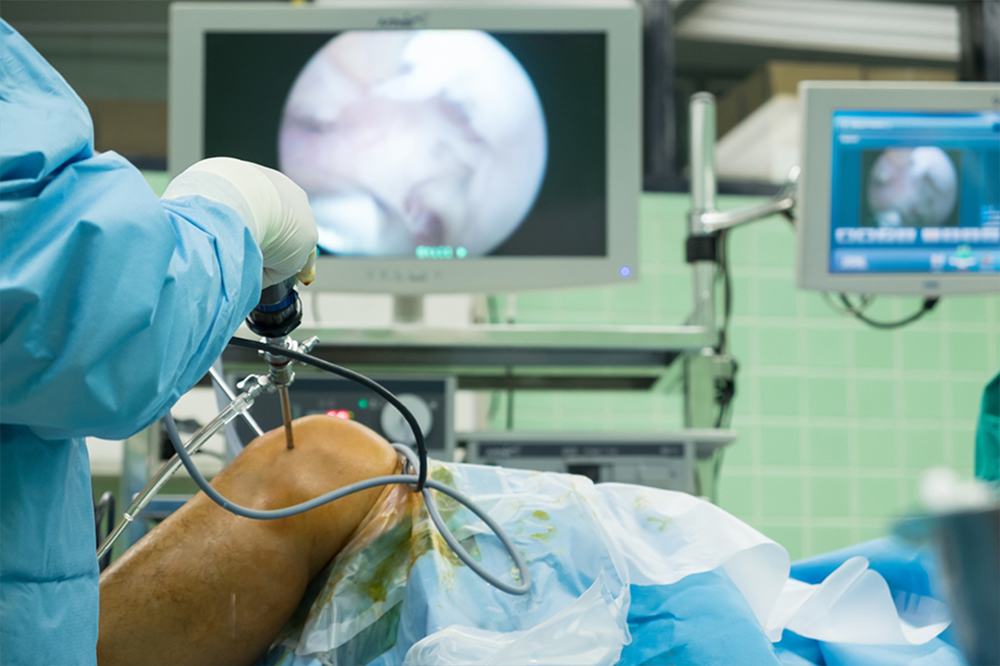
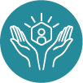

Cirugía mínima invasiva. Ideal para tratar lesiones de meniscos.
Procedimiento para una cirugía
Se realiza una evaluación clínica antes de rayos X con síntomas físicos perceptibles contrastados con el criterio de los profesionales de la salud que atienden. Se recomienda que el tiempo de evaluación este basado en el historial clínico y los datos del paciente. Se realizan cirugías artroscópicas además de brindar un seguimiento.

Personalización
Brindamos servicios personalizados para cada paciente y su respectivo tratamiento.
Rapidez
Contamos con el equipo y personal capacitado para brindar un servicio rápido, adecuado y eficiente.

Atención A1
Tenemos un servicio de buena calidad, donde nuestra atención A1 nos diferencia de la competencia.
Cirugía de meniscos
Cirugía de cartílago
Colocación de autoinjerto osteocondral y condroplástias.
Cirugía de ligamentos
Reconstrucción de ligamento cruzado anterior, ligamento cruzado posterior, ligamentos de esquina posterolateral y ligamento patelofemoral medial.
Pinzamiento anterior
Artroscopia de tobillo para secuelas dolorosas de esguinces o lesiones osteocondrales.
Desgarro de manguito rotador
Sutura y reinserción de tendones de manguito rotador.